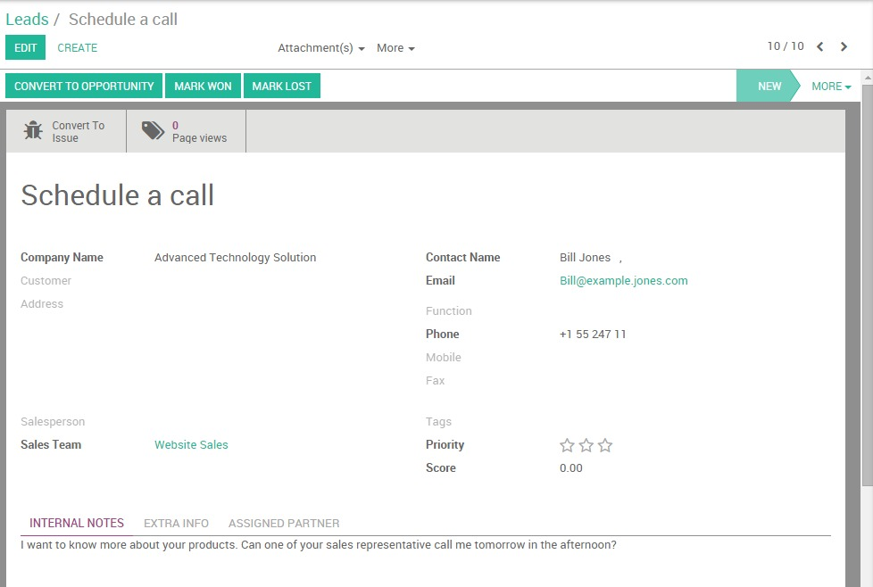
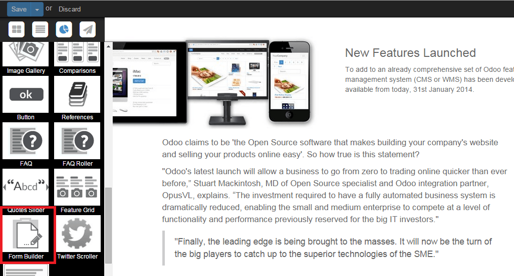

Your website should be your company's first lead generation tool. With your website being the central hub of your online marketing campaigns, you will naturally drive qualified traffic to feed your pipeline. When a prospect lands on your website, your objective is to capture his information in order to be able to stay in touch with him and to push him further down the sales funnel.
This is how a typical online lead generation process work :
- Your website visitor clicks on a call-to action (CTA) from one of your marketing materials (e.g. an email newsletter, a social media message or a blog post)
- The CTA leads your visitor to a landing page including a form used to collect his personal information (e.g. his name, his email address, his phone number)
- The visitor submits the form and automatically generates a lead into Odoo CRM
Tip
Your calls-to-action, landing pages and forms are the key pieces of the lead generation process. With Odoo Website, you can easily create and optimize those critical elements without having to code or to use third-party applications. Learn more here.
In Odoo, the Website and CRM modules are fully integrated, meaning that you can easily generate leads from various ways through your website. However, even if you are hosting your website on another CMS, it is still possible to fill Odoo CRM with leads generated from your website.
Activate the lead stage
By default, the lead stage is not activated in Odoo CRM. Therefore, new leads automatically become opportunities. You can easily activate the option of adding the lead step. If you want to import your contacts as leads rather than opportunities, from the Sales module go to , select the option use leads if… as shown below and click on Apply.

Note that even without activating this step, the information that follows is still applicable - the lead generated will land in the opportunities dashboard.
From an Odoo Website
Let's assume that you want to get as much information as possible about your website visitors. But how could you make sure that every person who wants to know more about your company's products and services is actually leaving his information somewhere? Thanks to Odoo's integration between its CRM and Website modules, you can easily automate your lead acquisition process thanks to the contact form and the form builder modules
Note
another great way to generate leads from your Odoo Website is by collecting your visitors email addresses thanks to the Newsletter or Newsletter Popup CTAs. These snippets will create new contacts in your Email Marketing's mailing list. Learn more here.
Configuration
Start by installing the Website builder module. From the main dashboard, click on Apps, enter "Website" in the search bar and click on Install. You will be automatically redirected to the web interface.

Tip
A tutorial popup will appear on your screen if this is the first time you use Odoo Website. It will help you get started with the tool and you'll be able to use it in minutes. Therefore, we strongly recommend you to use it.
Create a lead by using the Contact Form module
You can effortlessly generate leads via a contact form on your Contact us page. To do so, you first need to install the Contact Form module. It will add a contact form in your Contact us page and automatically generate a lead from forms submissions.
To install it, go back to the backend using the square icon on the upper-left corner of your screen. Then, click on Apps, enter "Contact Form" in the search bar (don't forget to remove the Apps tag otherwise you will not see the module appearing) and click on Install.

Once the module is installed, the below contact form will be integrated to your "Contact us" page. This form is linked to Odoo CRM, meaning that all data entered through the form will be captured by the CRM and will create a new lead.

Every lead created through the contact form is accessible in the Sales module, by clicking on . The name of the lead corresponds to the "Subject" field on the contact form and all the other information is stored in the corresponding fields within the CRM. As a salesperson, you can add additional information, convert the lead into an opportunity or even directly mark it as Won or Lost.
Create a lead using the Form builder module
You can create fully-editable custom forms on any landing page on your website with the Form Builder snippet. As for the Contact Form module, the Form Builder will automatically generate a lead after the visitor has completed the form and clicked on the button Send.
From the backend, go to Settings and install the "Website Form Builder" module (don't forget to remove the Apps tag otherwise you will not see the modules appearing). Then, back on the website, go to your desired landing page and click on Edit to access the available snippets. The Form Builder snippet lays under the Feature section.
As soon as you have dropped the snippet where you want the form to appear on your page, a Form Parameters window will pop up. From the Action drop-down list, select Create a lead to automatically create a lead in Odoo CRM. On the Thank You field, select the URL of the page you want to redirect your visitor after the form being submitted (if you don't add any URL, the message "The form has been sent successfully" will confirm the submission).

You can then start creating your custom form. To add new fields, click on Select container block and then on the blue Customize button. 3 options will appear:

- Change Form Parameters: allows you to go back to the Form Parameters and change the configuration
- Add a model field: allows you to add a field already existing in Odoo CRM from a drop-down list. For example, if you select the Field Country, the value entered by the lead will appear under the Country field in the CRM - even if you change the name of the field on the form.
- Add a custom field: allows you to add extra fields that don't exist by default in Odoo CRM. The values entered will be added under "Notes" within the CRM. You can create any field type : checkbox, radio button, text, decimal number, etc.
Any submitted form will create a lead in the backend.
From another CMS
If you use Odoo CRM but not Odoo Website, you can still automate your online lead generation process using email gateways by editing the "Submit" button of any form and replacing the hyperlink by a mailto corresponding to your email alias (learn how to create your sales alias here).
For example if the alias of your company is
salesEMEA@mycompany.com, add
mailto:salesEMEA@mycompany.com
into the regular hyperlink code (CTRL+K) to generate a lead into the
related sales team in Odoo CRM.
See also